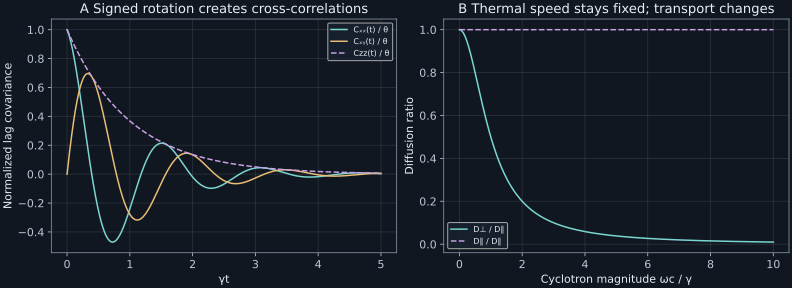

Chapter 15 · Lecture 18
Charged Brownian motion and anisotropic diffusion
A magnetic field does no work on a charged particle, yet it can reduce transverse spatial diffusion by a factor of seventeen while leaving thermal velocity variance unchanged. The field redirects a persistent velocity before it carries the particle far. The task is to distinguish thermal scatter, signed rotational response, and the symmetric covariance growth that defines a diffusion tensor.
The sequence follows NPTEL lecture 18: vector Langevin dynamics, rotation matrices, conditional velocity law, lag covariance, tensor Green–Kubo relation, and slow spatial reduction. All component signs below follow an explicitly stated SI convention; the lecture uses a different order for covariance indices.
15.1 The Lorentz drift is an antisymmetric rotation L18 1:19
Let a particle have signed charge $q$, mass $m\gt0$, position column $\boldsymbol X$, and velocity column $\boldsymbol V$ in three Cartesian dimensions. A uniform static magnetic field is $\boldsymbol B=B\boldsymbol n$, with magnitude $B\geq0$ and unit direction $\boldsymbol n$. In SI units the Lorentz force is $q\boldsymbol V\times\boldsymbol B$. Let $\gamma\gt0$ be isotropic drag rate and $\theta=k_BT/m\gt0$ the thermal variance per velocity component. Three independent standard Wiener drivers form the column $\boldsymbol W_t$. The equations are
$$d\boldsymbol X_t=\boldsymbol V_tdt,\qquad d\boldsymbol V_t=A\boldsymbol V_tdt+\sqrt{2\gamma\theta}\,d\boldsymbol W_t,\quad A=-\gamma I+\Omega J.\tag{15.1}$$Here $I$ is the identity matrix, $\Omega=qB/m$ is a signed cyclotron rate, and $J\boldsymbol v=\boldsymbol v\times\boldsymbol n$ defines the dimensionless matrix $J$. Its entries are $J_{ij}=\epsilon_{ijk}n_k$, with the totally antisymmetric Levi-Civita symbol $\epsilon_{ijk}$ and sum over $k$. The cyclotron magnitude is $\omega_c=|\Omega|$. For $\boldsymbol n=(0,0,1)^\mathsf T$, $J=\begin{pmatrix}0&1&0\\-1&0&0\\0&0&0\end{pmatrix}$: positive $q$ gives $\dot v_x=\Omega v_y$, $\dot v_y=-\Omega v_x$ before drag and noise.
The identity $\boldsymbol v\cdot(\boldsymbol v\times\boldsymbol n)=0$ proves that the magnetic term changes no instantaneous kinetic energy. Matrix antisymmetry $J^\mathsf T=-J$ expresses the same fact. Define parallel and transverse projectors $P_\parallel=\boldsymbol n\boldsymbol n^\mathsf T$ and $P_\perp=I-P_\parallel$. The vector triple-product identity gives $J^2=-P_\perp$, so $J^3=-J$. Summing the exponential series therefore yields
$$R(t)=e^{\Omega Jt}=P_\parallel+P_\perp\cos(\Omega t)+J\sin(\Omega t),\qquad e^{At}=e^{-\gamma t}R(t).\tag{15.2}$$The identity part commutes with $J$, permitting the factorization. Antisymmetry gives $R(t)R(t)^\mathsf T=I$, so this exponential is a rotation. In a deterministic rotating velocity frame $\boldsymbol U_t=R(-t)\boldsymbol V_t$, the magnetic drift disappears. The rotated isotropic noise is again Wiener noise because deterministic orthogonal transformations preserve its independent Gaussian increment covariance. This simplifies the velocity law; it does not simply remove the field from laboratory-frame spatial displacement.
15.2 Rotation preserves the thermal velocity covariance L18 23:38
Given deterministic initial velocity $\boldsymbol v_0$, the linear stochastic solution is $\boldsymbol V_t=e^{At}\boldsymbol v_0+\sqrt{2\gamma\theta}\int_0^te^{A(t-s)}d\boldsymbol W_s$. Its stochastic integral is multivariate Gaussian. Its covariance is $2\gamma\theta\int_0^te^{As}e^{A^\mathsf Ts}ds$. By (15.2), the product inside is $e^{-2\gamma s}I$. Hence
$$\mathbb E[\boldsymbol V_t\mid\boldsymbol v_0]=e^{-\gamma t}R(t)\boldsymbol v_0,\qquad C_{\mathrm{cond}}(t)=\theta(1-e^{-2\gamma t})I.\tag{15.3}$$The mean rotates and decays; the conditional covariance broadens isotropically just as in the zero-field OU model. The density is $\exp[-|\boldsymbol v-e^{-\gamma t}R(t)\boldsymbol v_0|^2/(2s_v^2)]/(2\pi s_v^2)^{3/2}$, where $s_v^2=\theta(1-e^{-2\gamma t})$. The squared norm contains the full vector difference. It is not a matrix power inside a scalar probability density.
At long times the mean vanishes and the density becomes the Maxwell Gaussian with covariance $\Sigma=\theta I$. Independently, the stationary covariance equation is $A\Sigma+\Sigma A^\mathsf T+2\gamma\theta I=0$. Substituting $\Sigma=\theta I$ makes the antisymmetric magnetic terms cancel. Stability follows because the eigenvalues of $A$ are $-\gamma$ and $-\gamma\pm i\Omega$; all real parts are negative. The transition covariances converge to the claimed equilibrium, establishing the full Gaussian limit.
The velocity forward equation is $\partial_t\rho=-\nabla_v\cdot(A\boldsymbol v\rho)+\gamma\theta\nabla_v^2\rho$. In the magnetic term, $\nabla_v\cdot(J\boldsymbol v)=\operatorname{tr}J=0$. For the Maxwell density, its radial gradient is perpendicular to $J\boldsymbol v$, so rotation contributes zero to the stationary equation. The drag and diffusion terms cancel as in chapter 10.
The Czopnik–Garbaczewski primary analysis, Section 2, develops the explicit magnetic velocity transition law rather than inferring dynamics from a stationary histogram. Its Lorentz equation uses a Gaussian-unit factor of $1/c$; (15.1) uses SI units. The rotation and Gaussian-covariance derivations here make that convention conversion explicit.
15.3 Ordered lag covariance retains the rotation sign L18 27:09
Initialize velocity in its stationary Maxwell law, independently of future noise. Define $C_{ij}(\tau)=\mathbb E[V_i(t+\tau)V_j(t)]$, so the later-time index is first. This ordering is explicit because transposing it reverses every antisymmetric cross-correlation. For $\tau\geq0$, write $\boldsymbol V_{t+\tau}=e^{A\tau}\boldsymbol V_t+$ independent mean-zero future noise. Multiplication by $\boldsymbol V_t^\mathsf T$ and averaging gives
$$C(\tau)=\theta e^{-\gamma\tau}[P_\parallel+P_\perp\cos(\Omega\tau)+J\sin(\Omega\tau)].\tag{15.4}$$With field along positive $z$, $C_{xx}=C_{yy}=\theta e^{-\gamma\tau}\cos\Omega\tau$, $C_{xy}=\theta e^{-\gamma\tau}\sin\Omega\tau$, $C_{yx}=-C_{xy}$, and $C_{zz}=\theta e^{-\gamma\tau}$. The sign check is immediate at very short lag: $v_x$ responds positively to initial $v_y$ for positive $\Omega$, so $C'_{xy}(0+)=\theta\Omega$.
At equal times the covariance is symmetric and isotropic. At unequal times an ordered covariance matrix need not be symmetric. Stationarity implies $C(-\tau)=C(\tau)^\mathsf T$, rather than componentwise evenness. The diagonal entries are even in lag, and the transverse cross entries are odd. No change of magnetic field is required to write this stationarity identity. Physical time reversal additionally reverses the external magnetic field; that is a different transformation of the experiment.
Independent Cartesian driving noises coexist with unequal-time output cross-correlations because the drift mixes components. Reversing charge or field changes the sine-term sign while preserving cosine and equal-time variances. That supplies an experimentally meaningful test of handedness beyond checking the trace or speed distribution.
15.4 Only the symmetric integral grows displacement covariance L18 38:24
Take fixed initial position and stationary zero-mean velocity. The displacement column is $\Delta\boldsymbol X_t=\int_0^t\boldsymbol V_sds$. Its covariance matrix is the double integral of the ordered velocity covariance. The two triangular time regions have opposite orderings, producing
$$\operatorname{Cov}(\Delta\boldsymbol X_t)=\int_0^t(t-s)[C(s)+C(s)^\mathsf T]ds.\tag{15.5}$$The covariance is symmetric by definition, so an antisymmetric term cannot contribute to it. With absolute integrability of all matrix entries, the dominated-convergence argument of chapter 10 gives $D=\lim_{t\to\infty}\operatorname{Cov}(\Delta\boldsymbol X_t)/(2t)=\int_0^\infty[C(s)+C(s)^\mathsf T]ds/2$.
The sine term in (15.4) cancels under transposition. The parallel integral is $\int_0^\infty e^{-\gamma s}ds=1/\gamma$. The transverse integral is the real part of $\int_0^\infty e^{-(\gamma-i\Omega)s}ds$, equal to $\gamma/(\gamma^2+\Omega^2)$. Multiplication by $\theta$ proves the result. Positive coefficients make the tensor positive definite for finite positive $\gamma,\theta$. ∎
At zero field the tensor is isotropic. At large $\omega_c/\gamma$, transverse diffusion is suppressed relative to parallel by $1/[1+(\omega_c/\gamma)^2]$. In the running dimensionless example $\gamma=\theta=1$, $\omega_c=4$, the ratio is $1/17=0.05882353$. Thermal speed variance is still one in each direction. Rapid directional rotation cancels contributions to long-range displacement without reducing instantaneous thermal scatter.
The finite-time transverse component variance is also explicit. With $a_c=\gamma-i\Omega$, integrate (15.5) to obtain $2\theta\operatorname{Re}[t/a_c-(1-e^{-a_ct})/a_c^2]$. Its parallel counterpart is $2\theta[t-(1-e^{-\gamma t})/\gamma]/\gamma$. Both begin as $\theta t^2$, because at sufficiently short times a stationary particle retains its initial velocity. Field-dependent diffusion appears after temporal integration, not in the initial ballistic coefficient.
The full integrated ordered covariance $M_C=\int_0^\infty C(s)ds=-\theta A^{-1}$ also contains $\theta\Omega J/(\gamma^2+\Omega^2)$. This antisymmetric term describes a signed transport response, not a mean-square displacement. For constant coefficients its contraction with a symmetric Hessian is zero, so it also drops from the homogeneous bulk diffusion operator. Boundary currents or force response can still reveal it.
15.5 Mobility and the slow spatial noise give the same symmetric tensor L18 46:36
Define the damping–rotation matrix $G=\gamma I-\Omega J=-A$. It is invertible: its eigenvalues are $\gamma$ and $\gamma\pm i\Omega$, none zero. Its inverse, obtained by separating the parallel direction and using $J^2=-P_\perp$, is
$$G^{-1}=\frac1\gamma P_\parallel+\frac{\gamma P_\perp+\Omega J}{\gamma^2+\Omega^2}.\tag{15.7}$$A small constant applied force $\boldsymbol F$ produces stationary mean velocity $\bar{\boldsymbol v}=G^{-1}\boldsymbol F/m$. Thus force mobility is $G^{-1}/m$ and has an antisymmetric Hall part. Its symmetric part multiplied by $k_BT$ is the displacement diffusion tensor, consistent with (15.6). The vector force must be coupled to the same mechanical coordinates for this equilibrium relation.
On coarse spatial time scales, the formal constant-coefficient reduction gives $d\boldsymbol X=\sqrt{2\gamma\theta}\,G^{-1}d\boldsymbol W$. Its noise covariance per unit time is $2\gamma\theta G^{-1}G^{-\mathsf T}$. The identity $G+G^\mathsf T=2\gamma I$ implies $$\gamma G^{-1}G^{-\mathsf T}=\frac{G^{-1}+G^{-\mathsf T}}2,\tag{15.8}$$
by multiplying on the left by $G^{-1}$ and right by $G^{-\mathsf T}$. Half the noise covariance is therefore the same $D$ as the symmetric Green–Kubo integral. A scalar square root applied entry by entry would not be a valid replacement for a matrix noise factor; covariance is the matrix product of the factor with its transpose.
This agreement identifies the asymptotic covariance and a diffusion approximation. It does not make the exact finite-inertia position process Markov. Its history retains velocity information. The primary analysis, Section 3 and its Smoluchowski discussion, similarly distinguishes phase-space propagation from reduced configuration-space descriptions. An asymptotic diffusion coefficient alone does not prove uniform accuracy for all temporal or boundary observables.
15.6 Laboratory: compare three tensor calculations
The laboratory checks (15.6) in three ways: quadrature of the ordered velocity matrix exponential, direct inverse-matrix integration, and the reduced noise covariance (15.8). It then builds the exact six-dimensional position–velocity covariance by integrating the linear noise kernel. A thermal initial velocity contribution is added explicitly. The displacement diagonal must agree with the independently integrated scalar cosine formulas.
Run python code/ch15_magnetic.py. With dimensionless $\gamma=\theta=1$, signed $\Omega=4$, and observation time 80, the program generates 200,000 exact Gaussian endpoints using seed 2026110815. It checks their displacement and velocity variances. It makes no network calls and writes JSON and text output beside the source. One-step Gaussian endpoints check moments efficiently; they are not a continuous-path animation.
D_parallel=1.00000000 D_perpendicular=0.05882353 Suppression ratio=0.05882353 At t=80: transverse MSD=9.51557093, parallel MSD=158.00000000
Dividing the finite-time transverse MSD by $2t$ has a bounded transient correction; it is not exactly the infinite-time coefficient at time 80. The final velocity variances remain near one despite the factor-seventeen transport anisotropy. That combination directly tests the opening physical distinction.

import numpy as np
def diffusion_tensor(gamma, theta, signed_omega):
if gamma <= 0 or theta <= 0:
raise ValueError("positive damping and thermal variance required")
transverse = theta*gamma/(gamma**2 + signed_omega**2)
return np.diag([transverse, transverse, theta/gamma])The function assumes the field direction is $z$, returns a symmetric diffusion matrix, and writes no files. It deliberately omits the antisymmetric mobility; conflating those outputs would defeat its definition. The full lab retains the ordered covariance integral to test the lost Hall part separately.
15.7 What the simple magnetic model omits
The model assumes a uniform imposed field, constant isotropic drag, classical equilibrium noise, and independent test particles. It omits collective plasma fields, collisions generating memory, spatially varying coefficients, confinement, and quantum orbital effects. The vanishing transverse diffusion limit is a statement at fixed positive drag and temperature as field grows; it does not describe every ordering of a collisionless or strong-field plasma limit. A constant magnetic field changes no kinetic energy through the Lorentz force, but drag and noise still exchange energy with the bath.
15.8 Exercises with worked solutions
Exercise 15.1 — No work, different diffusion (conceptual)
Explain why unchanged Maxwell variance does not force an unchanged diffusion coefficient.
Worked solution
Equal-time variance fixes the covariance at zero lag. Diffusion integrates covariance over positive lag. The field turns transverse covariance into a damped cosine whose positive and negative portions cancel. The initial thermal variance remains $\theta$, but the integral decreases from $\theta/\gamma$ to $\theta\gamma/(\gamma^2+\Omega^2)$. A single-time speed histogram does not determine directional persistence.
Exercise 15.2 — Field reversal (conceptual)
Which of $C_{xy}(t)$, equal-time covariance, and transverse MSD changes sign when charge changes sign?
Worked solution
The signed rate $\Omega$ changes sign. The sine cross-covariance changes sign; cosine diagonal correlations and the equal-time Maxwell covariance do not. MSD integrates only the symmetric covariance and is even in $\Omega$. Measuring only diagonal displacement variances therefore cannot determine charge sign in this model, whereas an ordered lag cross-correlation can.
Exercise 15.3 — Verify the inverse (derive)
Multiply (15.7) by $G$ and show why no parallel singularity occurs.
Worked solution
On the parallel subspace $J=0$, so $G=\gamma I$ and inverse is $I/\gamma$. On the transverse subspace, $(\gamma I-\Omega J)(\gamma I+\Omega J)=\gamma^2I-\Omega^2J^2=(\gamma^2+\Omega^2)I$. Mixed projector products vanish. Adding the two inverse actions gives (15.7). The rotation generator itself has a zero eigenvalue parallel to the field, but $G$ shifts it to positive $\gamma$, removing the singularity.
Exercise 15.4 — Derive tensor symmetrization (derive)
Why does integrating only $C_{ij}(s)$ fail to give a displacement covariance coefficient when $i\ne j$?
Worked solution
The displacement covariance double integral includes both time orderings. On the region $t_1\gt t_2$ its integrand is $C_{ij}(t_1-t_2)$; on the other triangle it is $C_{ji}(t_2-t_1)$. At lag $s$, each region has length weight $t-s$. Adding them gives (15.5), and division by $2t$ yields the symmetric integral. An antisymmetric integrated matrix would give $D_{ij}=-D_{ji}$, impossible for covariance. It can instead represent an ordered response quantity.
Exercise 15.5 — Infer the field-to-drag ratio (compute/design)
A test-particle model predicts $D_\perp/D_\parallel=1/17$. What magnitude $\omega_c/\gamma$ follows, and what can this measurement not determine?
Worked solution
Invert $r=1/[1+(\omega_c/\gamma)^2]$ to obtain $\omega_c/\gamma=\sqrt{1/r-1}=4$. The ratio does not determine charge sign or field direction's orientation, since it contains a square. It also does not separately determine $\gamma$, temperature, and mass. Parallel diffusion and independent thermal velocity variance would supply $\gamma=\theta/D_\parallel$ within this model. Model assumptions must be validated before interpreting a measured ratio that way.
Exercise 15.6 — A decisive simulator check (compute/design)
A simulation gets the Maxwell histogram correct but reports zero $C_{xy}(t)$ for every positive lag at nonzero field. Give two possible defects and a targeted check.
Worked solution
The drift may have omitted the off-diagonal Lorentz coupling, or the program may have averaged $C_{xy}$ with $C_{yx}$ before reporting an ordered correlation. Check the deterministic short-lag response $\partial_t\mathbb E[V_x(t)\mid\boldsymbol v_0]_{t=0}=-\gamma v_{0x}+\Omega v_{0y}$. Then compute the ordered sample covariance with later $x$ and earlier $y$; its initial slope must be $\theta\Omega$. The symmetric cross combination should vanish in this field-aligned isotropic model, so labeling the ordering is essential to diagnose which quantity was actually measured.
15.9 Sources and attribution
- V. Balakrishnan, NPTEL lecture 18, course 115106089.
- R. Czopnik and P. Garbaczewski, Brownian motion in a magnetic field, Physical Review E 63, 021105 (2001); author preprint, Section 2 and Section 3's configuration-space discussion. Used for the explicit velocity law, unit-convention comparison, and the distinction between inertial phase space and reduced spatial descriptions. All displayed derivations and numerical cases are developed here.